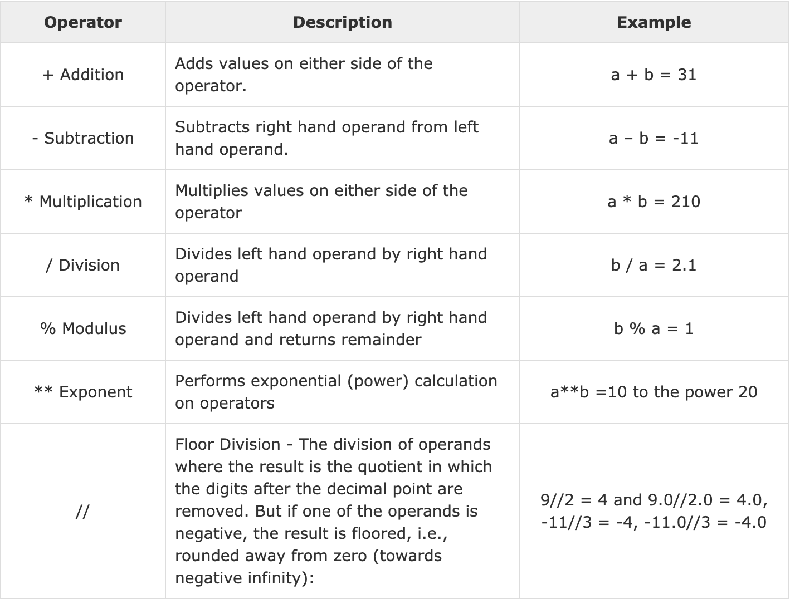
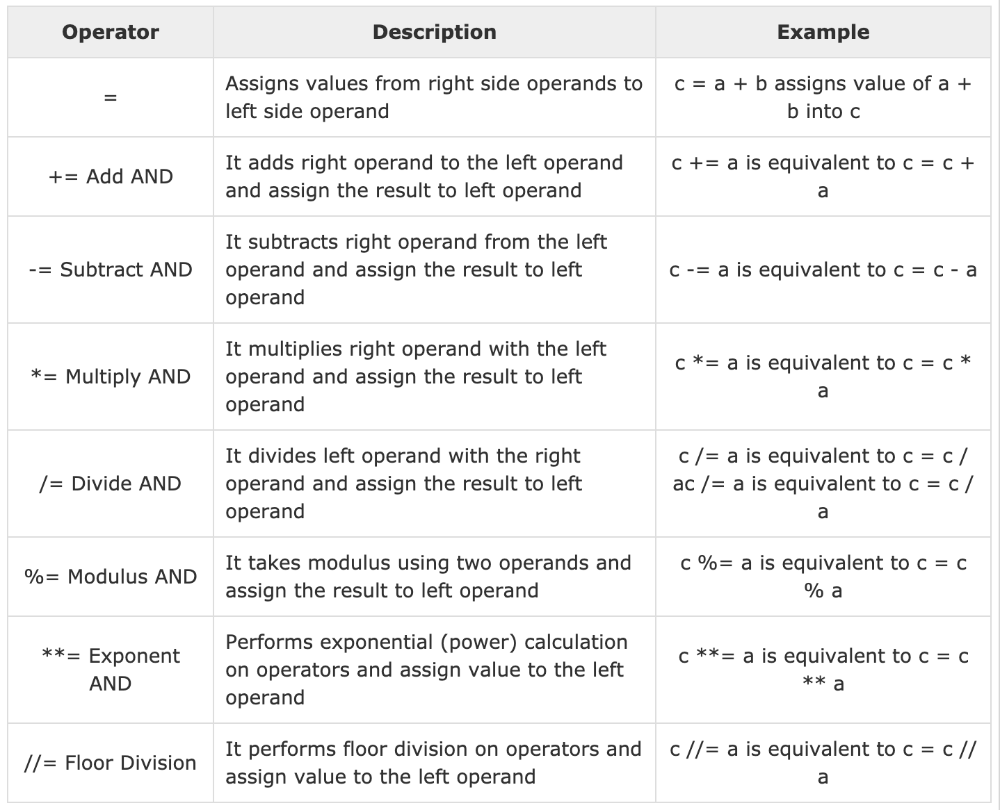

class: center, middle # Operators and operands --- # Operators Special symbols that represent computations # Operands The values the operator is applied --- # Python Arithmetic Operators <p></p> --- # Exercise ## Binary to Decimal --- # Python Assignment Operators <p></p> --- # Expressions and statements ** expression ** An expression is a combination of values, variables, and operators. A value all by itself is considered an expression, and so is a variable, so the following are all legal expressions (assuming that the variable x has been assigned a value): 17 x x + 17 A ** statement ** is a unit of code that the Python interpreter can execute. We have seen two kinds of statement: print and assignment. --- Technically an expression is also a statement, but it is probably simpler to think of them as different things. The important difference is that an expression has a value; a statement does not. --- # Order of operations When more than one operator appears in an expression, the order of evaluation depends on the rules of precedence. The acronym ** PEMDAS ** is a useful way to remember the rules: - ** Parentheses ** have the highest precedence and can be used to force an expression to evaluate in the order you want. Since expressions in parentheses are evaluated first, `2 * (3-1)` is 4, and `(1+1)**(5-2)` is 8. You can also use parentheses to make an expression easier to read, as in `(minute * 100) / 60`, even if it doesn’t change the result. - ** Exponentiation ** has the next highest precedence, so `2**1+1` is 3, not 4, and `3*1**3` is 3, not 27. - ** Multiplication ** and Division have the same precedence, which is higher than Addition and Subtraction, which also have the same precedence. So `2*3-1` is 5, not 4, and `6+4/2` is 8, not 5. - Operators with the same precedence are evaluated from left to right (except exponentiation). So in the expression `degrees / 2 * pi`, the division happens first and the result is multiplied by pi. To divide by 2π, you can use parentheses or write degrees / 2 / pi. --- # Increment and Decrement Unlike other programming languages, the shorthand increment `x++` or `++x` does not work with Python. To achieve similar behavior, we instead write ```python x += 1 ``` --- # Operators on Strings You can’t perform mathematical operations on strings, even if the strings look like numbers, so the following are illegal: `'2'-'1'` `'eggs'/'easy'` `'third'*'a charm'` The + operator works with strings, but it might not do what you expect: it performs ** concatenation **. ```python first = 'throat' second = 'warbler' print(first + second) ``` --- The `*` operator also works on strings; it performs repetition. `'Spam'*3` is `'SpamSpamSpam'.` --- # Comments As programs get bigger and more complicated, they get more difficult to read. Formal languages are dense, and it is often difficult to look at a piece of code and figure out what it is doing, or why. These notes are called comments, and they start with the # symbol: ```python # compute the percentage of the hour that has elapsed percentage = (minute * 100) / 60 ``` ```python percentage = (minute * 100) / 60 # percentage of an hour ``` --- Comments are most useful when they document non-obvious features of the code. It is reasonable to assume that the reader can figure out what the code does; it is much more useful to explain why. This comment is redundant with the code and useless: ```python v = 5 # assign 5 to v ``` This comment contains useful information that is not in the code: ```python v = 5 # velocity in meters/second. ``` --- # Exercise Give 5 different equations that would arrive with the number ** 129 **. The ff operators must appear in the equations: 1. exponentiation 2. parentheses 3. modulus 4. division 5. multiplication submit your python script with the proper and meaningful code comments ---